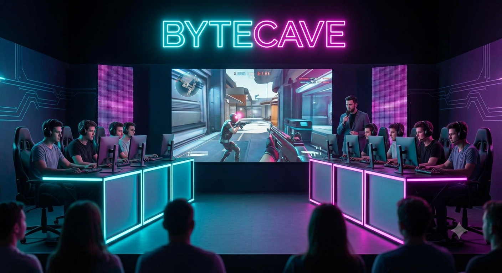

Turneringer & Events: Udfordring på alle niveauer

Vi tilbyder ugentlige turneringer og workshops, hvor spilglæde og teknisk dygtiggørelse går hånd i hånd. Vores events er sammensat, så der er plads til både legende hygge for de yngste og taktiske udfordringer for de erfarne hold.
- Begynder- & Breddehold: Her lærer vi de grundlæggende færdigheder – kommunikation på holdet, brug af radar, basal crosshair placement og god opførsel online.
- Esport & Taktik: Vi arbejder dybere med strats, utility-brug, demo-review og mental fokus under pres.
- Fysisk træning & Pause-zones: For dem der vil yde det optimale, kombinerer vi intensiv gaming med kropslige pauser, reaktionstræning og sunde snacks.
Al vores træning tager udgangspunkt i holdånden, så du lærer at støtte dine holdkammerater – selv når runden fejler.